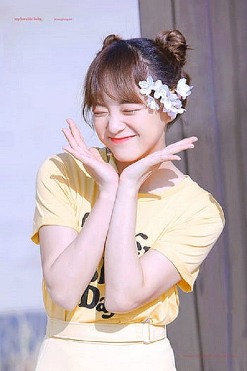

Beberapa Metode Yang Dipakai Untuk Menyisipkan Media
Menyisipkan Dengan Cara Embeded ( Penyematan )
Menyisipkan Media Dengan Source
Menyisipkan Secara Online
Media Dari Sumber Server Sendiri

Diatas Adalah Kim-Sejeong